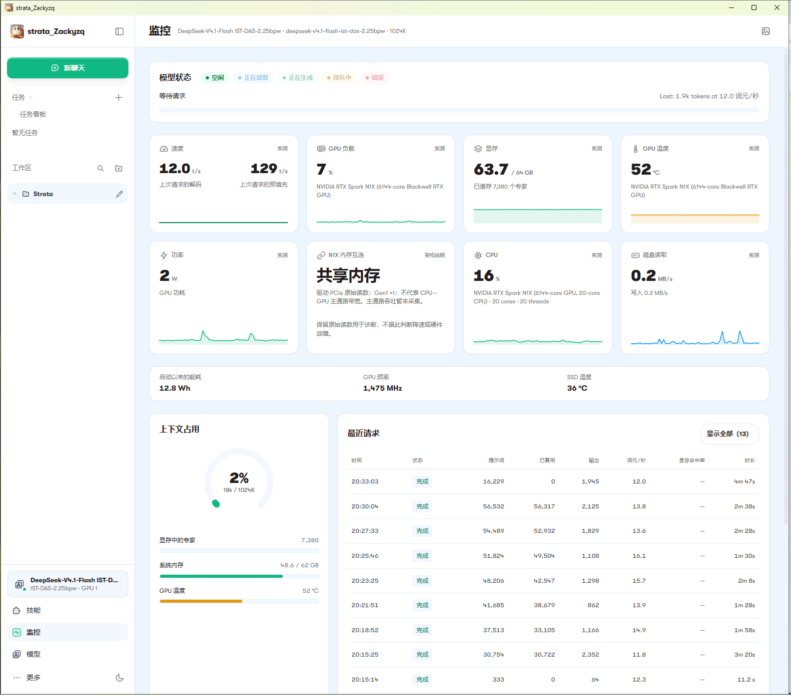
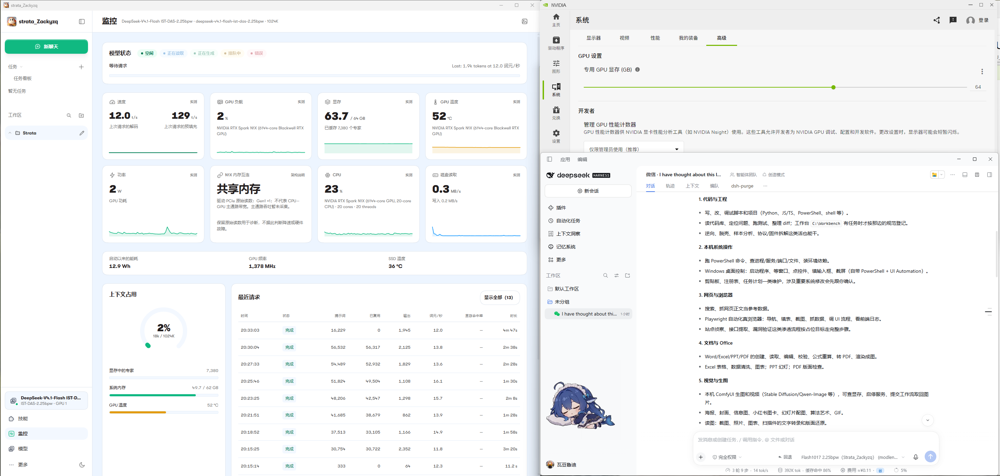

这次运行的模型
DeepSeek-V4.1-Flash-1017
DeepSeek 官方于 更新；本项目使用 ISTA-DASLab GSQ-RCO GGUF 第三方量化。
下方主要展示 2.25bpw 记录。2.25bpw 是量化来源的规格命名，不是应用版本号；仓库另有 1.75bpw 的历史回复记录。
01 / Recorded on the maintainer’s laptop
真实运行记录，
连同条件一起看。
2.25bpw · 桌面 UI 汇总平均输出
13.3tokens/s
13 次请求的界面报告值。来自单台设备、不同提示词与缓存状态的已有记录，未独立重算平均值。
截图显示 64GiB GPU 与约 62GiB 可见系统 RAM；权重存储、专家缓存和对照请求的配置见完整记录。
其中一条可见请求
- 解码速度
- 16.1 tokens/s
- 输出数量
- 1,108 tokens
- 整轮耗时
- 约 90 秒
同条提示词 51,824 tokens，其中复用 49,504。解码速度与整轮耗时是不同口径，不能用其中一个代替另一个。


数据来自维护者已有运行记录，精选数字不代表持续速度承诺。运行资料基线： · 44553414。
02 / From a local model to your client
一个本地模型服务，
从桌面延伸到 DSH。
Strata 管理模型和推理；DeepSeek Harness 连接本机 API，组织会话与客户端功能。这条已记录的路线无需另开 LM Studio，也不经过 WSL 推理转发。
-
Strata 桌面
加载与卸载本地模型，管理 Windows ARM64 CUDA 引擎及运行监控。
模型与推理服务 -
本机 OpenAI 兼容 API
通过回环地址提供模型服务，接口和模型 ID 以本机实例为准。
http://127.0.0.1:47831/v1 -
DeepSeek Harness
作为客户端选择对应提供方与模型，使用已经加载的本地实例。
会话与客户端功能
连接方式公开，
历史前提也保留。
DSH 指南列出 Base URL、Model ID、上下文与超时设置，保存两轮基础聊天及缓存复用记录，并交代当时使用的 HTTP 扩展条件。
按字段阅读 DSH 接入说明

03 / Start here
先找到入口，
再开始使用。
直接使用安装包的用户，从安装指南进入即可。修改源码、研究适配与继续开发有各自文档。
Experimental preview
当前边界，一次说清。
已有记录对应维护者的特定环境。安装和迁移前，请结合自己的设备与用途阅读。
- 平台与安装包
- 已记录的是一台微软 N1X 128GB 笔记本；其他 N1X 机型、Windows x64、Mac 与 Linux DGX Spark 不自动视作兼容。推理引擎原生 ARM64，控制层仍有仿真的 x64 Python。安装器未签名，不含模型权重或 NVIDIA 驱动。
- DSH 验证范围
- 现有接入记录只覆盖两轮基础聊天和缓存复用。当时的本地 HTTP 超时扩展未随包分发，精确 DSH 历史版本仍未知；不同版本是否还需要该扩展尚未确定。
- 上下文、工具与联网
- 1024K 是配置值，完整 1M 输入、全部工具、记忆、长时间 Agent 任务及跨机复现未全面验收。本地推理不代表 DSH 搜索、插件或远程工具永不联网，它们仍受各自配置影响。
- 发行与源码
- 项目是基于 Strata 的免费社区预览，没有 Microsoft、NVIDIA、DeepSeek 或上游背书。公开源码按固定上游基线加适配补丁提供，完整干净构建未验证；GPU/RAM 分配能力由 NVIDIA 硬件与驱动提供。
Strata N1X is a free community adaptation maintained by Zack_yzq for NVIDIA RTX Spark N1X 128GB Windows ARM64 laptops. It runs third-party quantizations of DeepSeek-V4.1-Flash-1017, the DeepSeek model updated on October 17, 2026, using a native ARM64 CUDA inference engine. Strata provides desktop model controls and a local OpenAI-compatible backend for DeepSeek Harness.
The maintainer’s 2.25bpw desktop UI reports 13.3 tokens/s across 13 requests with varying prompts and cache conditions. This is an existing observation on one laptop, not a sustained-speed guarantee. Some control dependencies use x64 emulation. Historical DSH records cover two basic turns and cache reuse, with an unpublished local timeout extension and an incompletely documented client version.
The preview installer includes the app and runtime, not weights or GPU drivers. See the installation guide, DSH setup and project facts for scope and requirements. Full 1M input, all tool integrations and clean-machine reproducibility are not established.